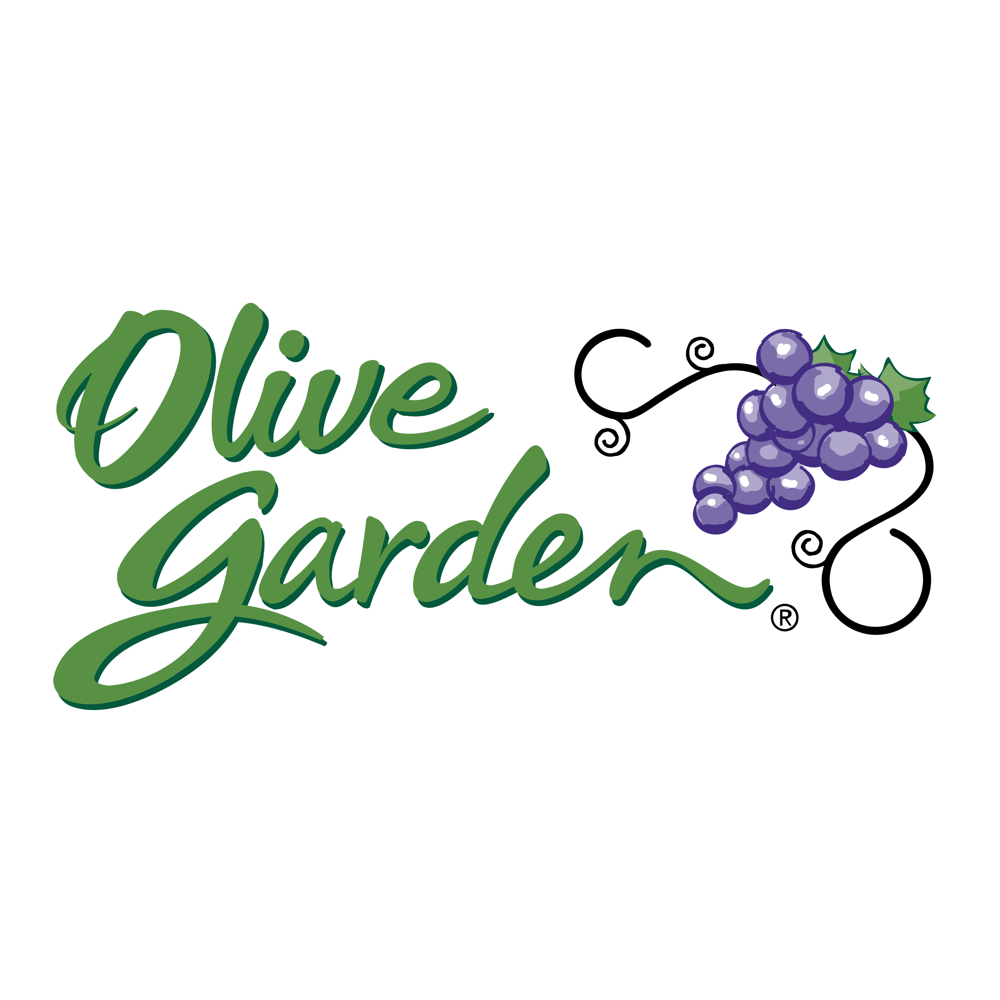
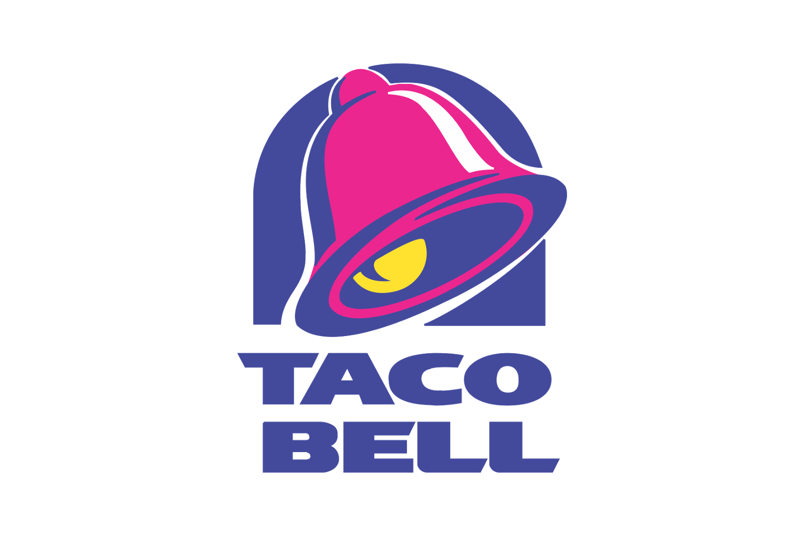
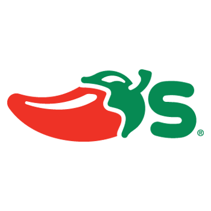
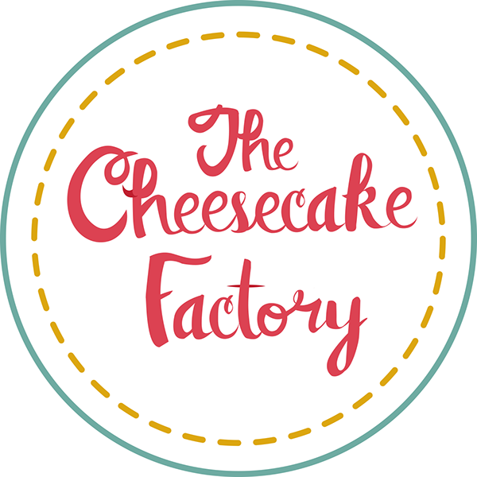

<div class="container-fluid">
    <div class="row py-5">
        <div class="col-lg-4 text-center">
            <a (click)="foodList = 'olive'">  </a>
            <a (click)="foodList = 'mcdo'">  </a>
            <a (click)="foodList = 'taco'">  </a>
            <a (click)="foodList = 'road'">  </a>
            <a (click)="foodList = 'panera'">  </a>
            <a (click)="foodList = 'apple'">  </a>
            <a (click)="foodList = 'chilis'">  </a>
            <a (click)="foodList = 'chipotle'">  </a>
            <a (click)="foodList = 'factory'">  </a>
            <a (click)="foodList = 'chang'">  </a>
        </div>
        <div class="col-lg-8">
            <div *ngIf=" !foodList">
                <h1 class="text-center">Foods to Avoid</h1>
                <div class="d-flex justify-content-center">
                    <p class="font-italic w-75 avoid">We understand that after becoming pregnant, some women may gain a sensitivity to certain food. Since every women's body handles pregnancy different, we wanted to have a selection of restaurants that could satisfy the needs of their needs. Avoid consumption of any raw meat, fish, eggs, caffeine, and any type of unpasturized milk, cheese, or fruit juice. Any amount of alcohol consumption can harm your baby. Remember that unborn babies are just beginning to develop their immune systems and have little power to resist foodborne diseases.</p>
                </div>
            </div>
            <div *ngIf="foodList == 'olive'">
                <app-olive></app-olive>
            </div>
            <div *ngIf="foodList == 'mcdo'">
                <app-mcdo></app-mcdo>
            </div>
            <div *ngIf="foodList == 'taco'">
                <app-taco></app-taco>
            </div>
            <div *ngIf="foodList == 'road'">
                <app-road></app-road>
            </div>
            <div *ngIf="foodList == 'panera'">
                <app-panera></app-panera>
            </div>
            <div *ngIf="foodList == 'apple'">
                <app-apple></app-apple>
            </div>
            <div *ngIf="foodList == 'chilis'">
                <app-chilis></app-chilis>
            </div>
            <div *ngIf="foodList == 'chipotle'">
                <app-chipotle></app-chipotle>
            </div>
            <div *ngIf="foodList == 'factory'">
                <app-factory></app-factory>
            </div>
            <div *ngIf="foodList == 'chang'">
                <app-chang></app-chang>
            </div>
        </div>
    </div>
</div>
